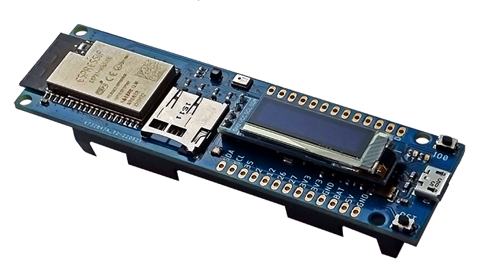
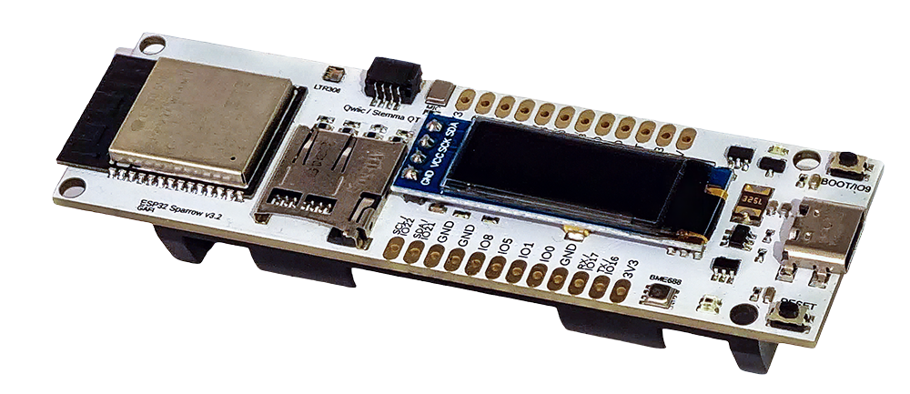

Espressif ESP32-Sparrow
The ESP32-Sparrow is a custom open-source development board for the ESP32 SoC, based on a ESP32-WROVER module. You can find the original V2 version and the newer V3 variant, based on a ESP32-C6 module. This page documents the original V2 version.
 ESP32 Sparrow V2 |
 ESP32 Sparrow V3 |
Features
ESP32 WROVER Module
USB-to-UART bridge via micro USB port
BME680 temperature, humidity, pressure and air quality sensor
LTR308 ambient light sensor/luxmeter
128x32 SSD1306 OLED
RGB LED
I2S Microphone
Micro-SD Card Holder
18650 LiPo battery holder with charging circuit
Expansion headers
Serial Console
The serial console will show up as /dev/ttyUSB[n] where [n] will probably be 0.
GPIO Pin Mapping
Pin |
Signal |
Notes |
|---|---|---|
GPIO0 |
BOOT |
Connected to BOOT switch |
GPIO2 |
SD_DATA0 |
SPI MISO / SDIO Data 0 |
GPIO4 |
SD_DATA1 |
SDIO Data 1 / General IO |
GPIO5 |
SD_CS |
SPI Chip Select for Micro-SD Card (SS) |
GPIO12 |
SD_DATA2 |
SDIO Data 2 / MTDI |
GPIO13 |
LED_G |
Green channel for RGB LED |
GPIO14 |
LED_R |
Red channel for RGB LED |
GPIO15 |
LED_B |
Blue channel for RGB LED |
GPIO18 |
SPI_SCK |
SPI Clock for SD Card |
GPIO19 |
SPI_MISO |
SPI Data Input (MISO) for SD Card |
GPIO21 |
I2C_SDA |
I2C Data line (for BME680, LTR308, OLED) |
GPIO22 |
I2C_SCL |
I2C Clock line (for BME680, LTR308, OLED) |
GPIO23 |
SPI_MOSI |
SPI Data Output (MOSI) for SD Card |
GPIO25 |
I2S_WS |
LRCK for MEMS Microphone |
GPIO26 |
I2S_SCK |
BCLK for MEMS Microphone |
GPIO35 |
I2S_SD |
DIN for MEMS Microphone |
Configurations
All of the configurations presented below can be tested by running the following commands:
$ ./tools/configure.sh esp32-sparrow:<config_name>
$ make flash ESPTOOL_PORT=/dev/ttyUSB0 -j
Where <config_name> is the name of board configuration you want to use, i.e.: nsh, wifi…
Then use a serial console terminal like picocom configured to 115200 8N1.
ble
This configuration is used to enable Bluetooth Low Energy support for this board. You can scan for Bluetooth devices using the following commands:
NuttShell (NSH) NuttX-10.2.0
nsh> ifconfig
bnep0 Link encap:UNSPEC at DOWN
inet addr:0.0.0.0 DRaddr:0.0.0.0 Mask:0.0.0.0
wlan0 Link encap:Ethernet HWaddr ac:67:b2:53:8b:ec at UP
inet addr:10.0.0.2 DRaddr:10.0.0.1 Mask:255.255.255.0
nsh> bt bnep0 scan start
nsh> bt bnep0 scan stop
nsh> bt bnep0 scan get
Scan result:
1. addr: 63:14:2f:b9:9f:83 type: 1
rssi: -90
response type: 3
advertiser data: 1e ff 06 00 01 09 20 02 7c 33 a3 a7 cd c9 44 5b
2. addr: 52:ca:05:b5:ad:77 type: 1
rssi: -82
response type: 3
advertiser data: 1e ff 06 00 01 09 20 02 03 d1 21 57 bf 19 b3 7a
3. addr: 46:8e:b2:cd:94:27 type: 1
rssi: -92
response type: 2
advertiser data: 02 01 1a 09 ff c4 00 10 33 14 12 16 80 02 0a d4
4. addr: 46:8e:b2:cd:94:27 type: 1
rssi: -92
response type: 4
advertiser data: 18 09 5b 4c 47 5d 20 77 65 62 4f 53 20 54 56 20
5. addr: 63:14:2f:b9:9f:83 type: 1
rssi: -80
response type: 3
advertiser data: 1e ff 06 00 01 09 20 02 7c 33 a3 a7 cd c9 44 5b
mqttc
This configuration tests the MQTT-C publisher example.
From the host, start the broker and subscribe to the test topic. Using
mosquitto this should be:
$ mosquitto&
$ mosquitto_sub -t test
From the NSH, connect to an access point:
nsh> wapi psk wlan0 mypasswd 3
nsh> wapi essid wlan0 myssid 1
nsh> renew wlan0
Publish to the broker:
nsh> mqttc_pub -h 192.168.1.11
The default behavior is to publish the message test. The following should be
outputted:
nsh> mqttc_pub -h 192.168.1.11
Success: Connected to broker!
Success: Published to broker!
Disconnecting from 192.168.1.11
From the host the message test should be outputted.
Apart from the -h option, there are multiple options that can be used with the publisher example:
Option |
Default value |
Description |
|---|---|---|
-h |
broker.hivemq.com |
Set the host (broker) IP |
-p |
1883 or 8883 |
Set port value |
-m |
“test” |
Message to be sent |
-t |
test |
Set topic value |
-n |
1 |
Number of times to publish |
-q |
0 |
QoS (Quality of Service) level |
-c |
Certificate file (only for TLS connection) |
nsh
Basic NuttShell configuration (console enabled in UART0, exposed via USB connection by means of CP2102 converter, at 115200 bps).
wifi
Enables Wi-Fi support. You can define your credentials this way:
$ make menuconfig
-> Application Configuration
-> Network Utilities
-> Network initialization (NETUTILS_NETINIT [=y])
-> WAPI Configuration
Or if you don’t want to keep it saved in the firmware you can do it at runtime:
nsh> wapi psk wlan0 mypasswd 3
nsh> wapi essid wlan0 myssid 1
nsh> renew wlan0
Tip
Please refer to ESP32 Wi-Fi Station Mode for more information.